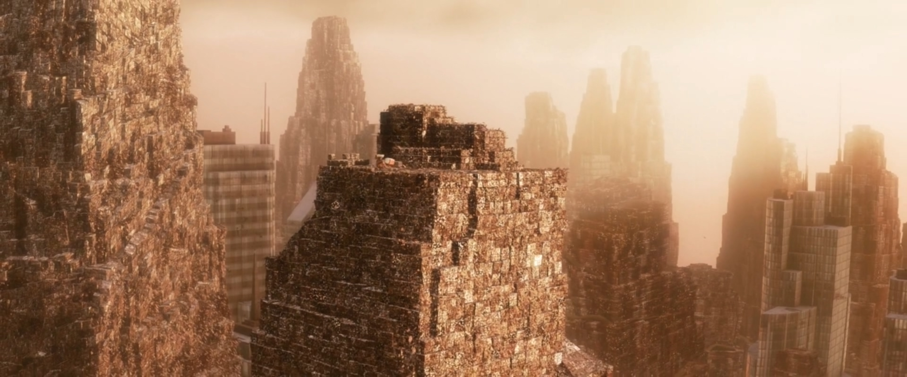
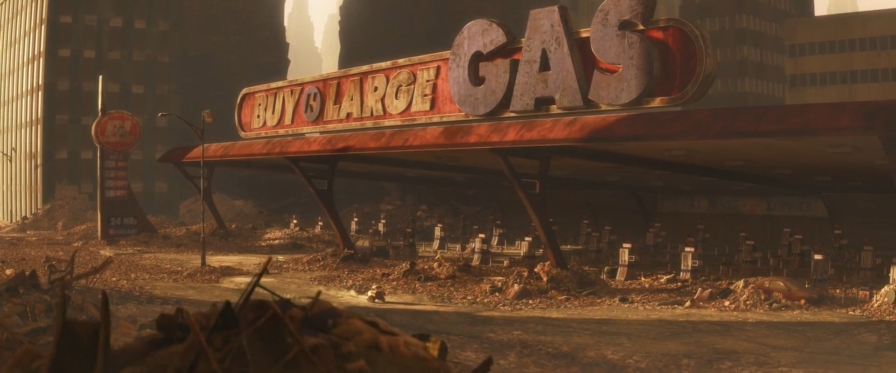

The dystopian planet of WALL•E was a blend of the fantastic and familiar.
Audiences needed to recognize Earth but also understand how things had gone wrong on such a massive scale.

In a short scene that followed WALL•E on his daily routine, the filmmakers wanted to reveal the planet's history in entirely visual terms.

Even a robot on a dystopian planet needs a place to call home. At first WALL•E’s truck is enlivened only by a cockroach and a Hello, Dolly! video.